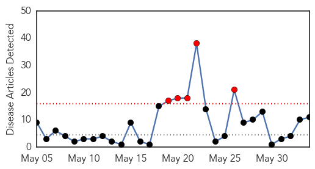
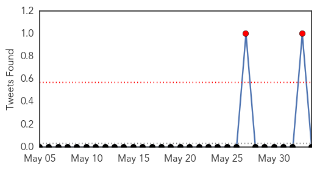
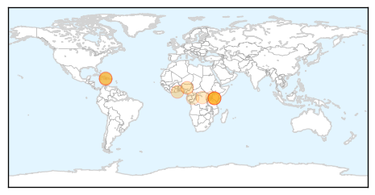
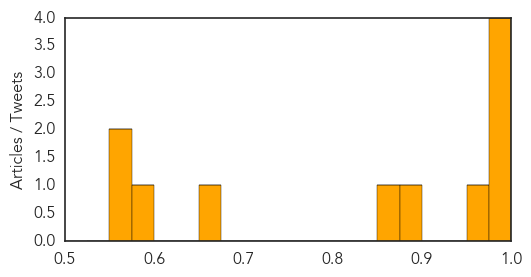
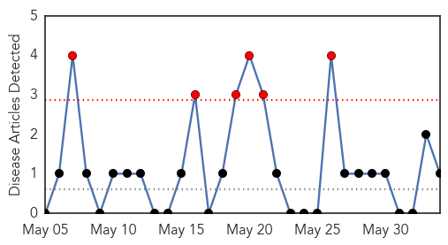
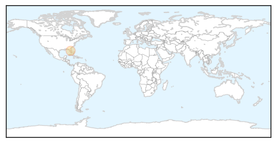

Cholera
30-Day Web Trend
5 alerts, 0 warnings

30-Day Twitter Trend
0 alerts, 0 warnings

Article Locations
Article Confidences
Top Articles:
- 0.998
- Haiti struggles to stem cholera as rains come early
- 0.995
- The most from the coast
- 0.988
- MSF concerned with the rapid spread of cholera in Kenya
- 0.976
- MSF concerned with the rapid spread of the cholera outbreak in Kenya
- 0.973
- Haiti Cholera Plaintiffs Appeal Ruling
- 0.881
- 70 in Jos hospitals after cholera, diarrhoea outbreaks
- 0.874
- Ghana Health Service To Step Up Public Education To Prevent Cholera Outbreak
- 0.670
- UN relief wing boosts emergency support to refugees fleeing Burundi crisis
- 0.586
- Kenya: Kenya: Cholera Emergency Plan of Action (EPoA) Operation n MDRKE033, EPoA update n 1
- 0.568
- Emergency support to refugees fleeing Burundi crisis
- 0.552
- Haitian government assumes very strong leadership in fight against Cholera
Top Tweets:
- 0.716
- RT: Possible cholera outbreak after NepalEarthquake http://t.co/…
Chikungunya
30-Day Web Trend
6 alerts, 0 warnings

30-Day Twitter Trend
0 alerts, 0 warnings

Article Locations
Article Confidences

Top Articles:
Top Tweets:
-
No tweets found for Jun 03, 2015